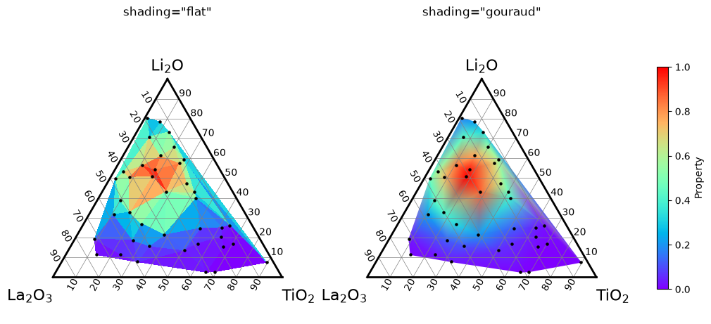
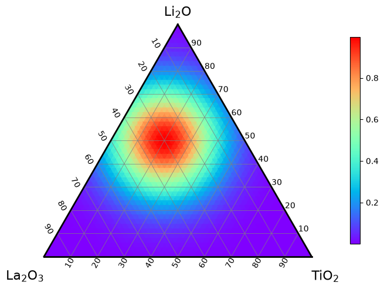
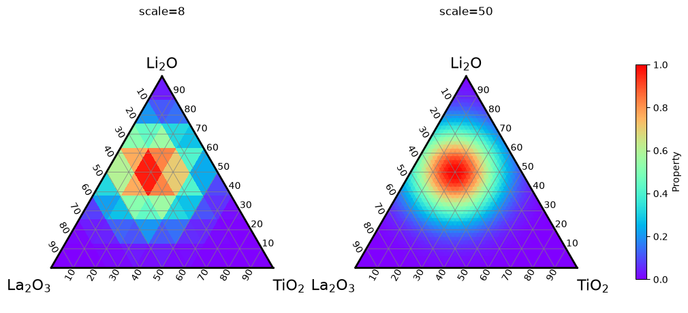
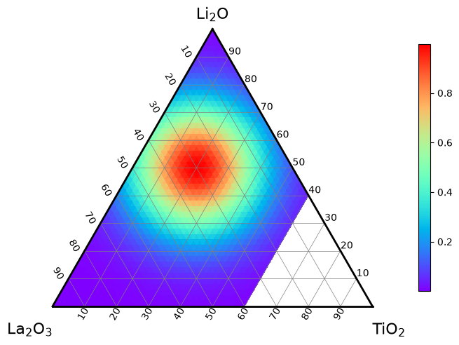
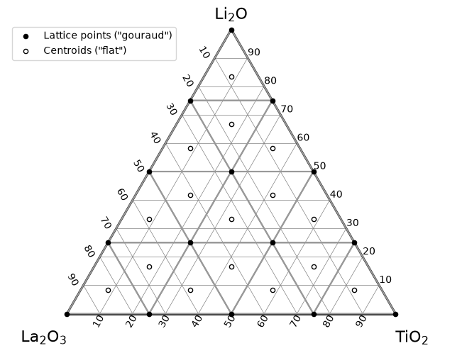
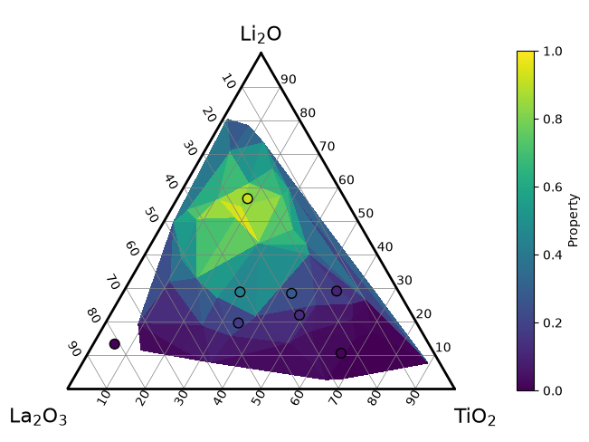
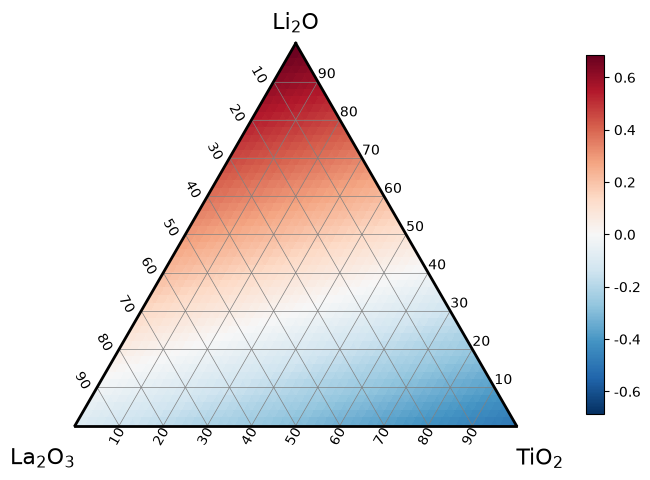

Heatmaps and contour maps#
This page compares the four ways to color a ternary diagram by a value: a colored scatter plot, a contour map, a heatmap of measured points and a heatmap of a function of the composition, and explains how to choose between them. It also shows how to set the color range and the colormap, how to share one colorbar between plots, and what happens to missing values.
The values on this page are made up for illustration. They come from a smooth function with a peak near 50 % Li2O, 30 % La2O3 and 20 % TiO2, and are not measured properties of the Li2O–La2O3–TiO2 system. The “measurements” are this function evaluated at 40 random compositions.
import matplotlib.pyplot as plt
import numpy as np
from matplotlib.colors import CenteredNorm
from ternary_diagram import TernaryDiagram
from ternary_diagram.utils import get_triangular_lattice
materials = ["Li2O", "La2O3", "TiO2"]
def property_value(a, b, c):
"""A made-up property between 0 and 1, highest near (0.5, 0.3, 0.2)."""
distance2 = (a - 0.5) ** 2 + (b - 0.3) ** 2 + (c - 0.2) ** 2
return np.exp(-distance2 / 0.08)
rng = np.random.default_rng(0)
compositions = rng.dirichlet([1.5, 1.5, 1.5], size=40)
values = property_value(*compositions.T)
Which plot should I use?#
The four methods differ in what they take as input, in whether they fill the space between the data, and in which part of the diagram they paint:
Plot |
Method |
Input |
Between the data |
Painted area |
Good for |
|---|---|---|---|---|---|
Colored scatter plot |
|
Values at measured compositions |
Nothing is drawn |
Only the points |
Few or scattered measurements, and showing exactly where they are |
Contour map |
Values at measured compositions |
Interpolated linearly in the triangles joining the points, then split into levels |
Inside the convex hull of the points |
A smooth overview of many measurements, and lines of equal value |
|
Heatmap of measured points |
Values at measured compositions |
Each triangle joining 3 points is painted from their values: in one color with |
Inside the convex hull of the points |
Showing the measurements as areas while keeping the triangles between them visible; missing values stay visible as holes |
|
Heatmap of a function |
A function |
Not needed: the function is evaluated on a fine regular lattice |
The whole diagram, except where the function returns NaN |
Predictions of a machine learning model and formulas |
The next figure draws the same data in the four ways, on the same color range. The black dots in the contour map and the heatmap of measured points are the measured compositions: both paint only inside the polygon that encloses them (their convex hull), while the heatmap of the function covers the whole diagram.
fig, axes = plt.subplots(2, 2, figsize=(9, 8), layout="constrained")
tds = [TernaryDiagram(materials, ax=ax) for ax in axes.flat]
points = tds[0].scatter(
compositions, z=values, z_min=0, z_max=1, colorbar=False
)
contours = tds[1].contour(
compositions, values, z_min=0, z_max=1, colorbar=False
)
mesh = tds[2].tripcolor(
compositions, values, z_min=0, z_max=1, colorbar=False
)
heatmap = tds[3].heatmapf(property_value, z_min=0, z_max=1, colorbar=False)
for td in tds[1:3]:
markers = td.scatter(compositions, color="black", s=5)
titles = ["scatter", "contour", "tripcolor", "heatmapf"]
for ax, title in zip(axes.flat, titles):
ax_title = ax.set_title(title, pad=24)
cbar = fig.colorbar(heatmap, ax=axes, shrink=0.6, label="Property")
![Four ternary diagrams of Li2O, La2O3 and TiO2 in a 2 by 2 grid with one shared colorbar labeled Property from 0 to 1 on the right, all in the rainbow colormap with red for high values near 50 % Li2O, 30 % La2O3 and 20 % TiO2 and purple for low values. Top left, titled scatter, 40 colored points. Top right, titled contour, a smooth filled contour map inside the polygon enclosing the 40 points, shown as small black dots. Bottom left, titled tripcolor, the same polygon divided into triangles between the black dots, each painted in one color. Bottom right, titled heatmapf, a smooth color map that fills the whole triangle up to its edges.](../_images/301434186e7c1e60d3a585c5a299b3dc0ff4f831e2f56e30e353d57108e7488f.png)
A few points to keep in mind when choosing:
scatter,contourandtripcolortake the compositions and their values asvectorandz, the first two arguments;heatmapftakes a function instead.Without
levels,contouruses 101 levels evenly spaced over the range of the values, so the filled contours look like a continuous color map. Passlevels(a number of levels or the values themselves) for visible steps, orfill=Falsefor contour lines only.A contour map draws smooth colors even where there are few measurements;
tripcolorshows the size of each triangle, so sparse regions remain visible as large triangles.The contour map is drawn with
zorder0 and the two heatmaps withzorder-1, so a contour map stays in front of a heatmap and the points ofscatter(zorder3) stay in front of both; see Layering and transparency in Drawing phase diagrams.
Flat and Gouraud shading#
tripcolor joins the compositions into triangles (a Delaunay triangulation) and paints each triangle from the values at its 3 vertices.
shading decides how:
shading="flat"(the default) paints each triangle with one color, that of the mean of the values at its 3 vertices. The colors change in steps at the edges of the triangles, and the value at each measured composition is averaged with those of its neighbors, so a triangle rarely reaches the colors at the ends of the colorbar.shading="gouraud"paints each triangle with colors that vary linearly between its 3 vertices, so each measured composition gets the color of its own value and the colors change smoothly across the edges.
fig, axes = plt.subplots(1, 2, figsize=(10, 4.5), layout="constrained")
for ax, shading in zip(axes, ["flat", "gouraud"]):
td = TernaryDiagram(materials, ax=ax)
mesh = td.tripcolor(
compositions,
values,
z_min=0,
z_max=1,
shading=shading,
colorbar=False,
)
markers = td.scatter(compositions, color="black", s=5)
ax_title = ax.set_title(f'shading="{shading}"', pad=24)
cbar = fig.colorbar(mesh, ax=axes, shrink=0.8, label="Property")

tripcolor returns a matplotlib.collections.PolyCollection with "flat" and a matplotlib.collections.TriMesh with "gouraud".
With "gouraud", the colors inside each triangle follow the same linear interpolation as a contour map, but continuously instead of in levels; with "flat", nothing is interpolated.
Both paint only inside the convex hull of the compositions.
Compositions that are the same after normalization are used only once and emit a UserWarning; average their values before calling tripcolor.
Heatmaps of a function#
heatmapf() paints a function of the composition over the whole diagram.
It divides the diagram into a regular lattice of small triangles and calls the function once, as func(a, b, c), where a, b and c are 1-D arrays of the same length holding the three components of all the evaluation points, in the order of the materials.
At each point, a + b + c is 1.
The function must return one value per point, so write it with numpy operations on arrays.
The next cell records the shapes of the arguments to show that the function is called only once:
calls = []
def recorded_property(a, b, c):
calls.append((a.shape, b.shape, c.shape))
return property_value(a, b, c)
fig, ax = plt.subplots(layout="constrained")
td = TernaryDiagram(materials, ax=ax)
heatmap = td.heatmapf(recorded_property, colorbar=True)
print(f"called {len(calls)} time(s) with arrays of shapes {calls[0]}")
called 1 time(s) with arrays of shapes ((2500,), (2500,), (2500,))

A machine learning model that predicts from a table of compositions can be passed as lambda a, b, c: model.predict(np.column_stack([a, b, c])).
A function that accepts only numbers, not arrays, can be wrapped with numpy.vectorize, which calls it for each point.
Lattice size#
scale is the number of parts into which each edge of the diagram is divided; the lattice has scale ** 2 small triangles.
The default scale=50 paints 2,500 triangles.
A larger scale gives a smoother map but evaluates the function at more points and makes figures saved in vector formats (PDF, SVG) larger, since each triangle is saved as its own polygon.
fig, axes = plt.subplots(1, 2, figsize=(10, 4.5), layout="constrained")
for ax, scale in zip(axes, [8, 50]):
td = TernaryDiagram(materials, ax=ax)
heatmap = td.heatmapf(
property_value, scale=scale, z_min=0, z_max=1, colorbar=False
)
ax_title = ax.set_title(f"scale={scale}", pad=24)
cbar = fig.colorbar(heatmap, ax=axes, shrink=0.8, label="Property")

Leaving regions unpainted#
Return NaN where the function has no meaningful value, and the triangles colored by those values are left unpainted. For example, a model trained only on compositions with at most 60 % TiO2 should not be trusted beyond them:
def property_within_training_range(a, b, c):
return np.where(c > 0.6, np.nan, property_value(a, b, c))
fig, ax = plt.subplots(layout="constrained")
td = TernaryDiagram(materials, ax=ax)
heatmap = td.heatmapf(property_within_training_range, colorbar=True)

The color range is taken from the finite values only.
tripcolor accepts mask to leave chosen triangles unpainted, but heatmapf does not, because its lattice is fixed; return NaN instead.
The lattice#
get_triangular_lattice() returns the lattice used by heatmapf as (vertices, triangles): vertices holds the compositions of the (scale + 1) * (scale + 2) / 2 lattice points (one row per point, summing to 1), and triangles holds the row numbers of the 3 vertices of each of the scale ** 2 small triangles.
shading decides where the function is evaluated.
With "flat", it is evaluated at the centroid of each small triangle, which never lies on an edge of the diagram, and each triangle gets one color; use it for a function that is not defined on the edges, for example one that divides by a component or takes its logarithm.
With "gouraud", it is evaluated at the lattice points, including those on the edges and at the vertices, and the colors vary linearly inside each triangle.
vertices, triangles = get_triangular_lattice(4)
centroids = vertices[triangles].mean(axis=1)
print(vertices.shape, triangles.shape)
fig, ax = plt.subplots(layout="constrained")
td = TernaryDiagram(materials, ax=ax)
for triangle in triangles:
edges = td.plot(vertices[triangle[[0, 1, 2, 0]]], color="0.6")
lattice_points = td.scatter(
vertices, color="black", s=20, label='Lattice points ("gouraud")'
)
centers = td.scatter(
centroids,
facecolors="white",
edgecolors="black",
s=20,
label='Centroids ("flat")',
)
legend = td.ax.legend(loc="upper left")
(15, 3) (16, 3)

You can evaluate a model at the same points to save the values that the heatmap shows, for example property_value(*centroids.T) for scale=4 with "flat".
Color range and colorbars#
By default each plot spans its colors over the range of its own values, so the same color can mean different values in two plots.
z_min and z_max fix the lower and upper limits of the color scale; vmin and vmax are accepted as aliases.
Values outside the range get the colors at the ends of the colormap, except in a contour map, which draws nothing outside its levels.
cmap chooses the colormap, as in matplotlib.
To show several plots against one colorbar, give them the same z_min, z_max and cmap, draw them with colorbar=False, and add one colorbar with colorbar().
Here a heatmap of the 40 measurements and 8 new measurements drawn as points on top share one color scale:
new_compositions = np.random.default_rng(1).dirichlet([1.5, 1.5, 1.5], 8)
new_values = property_value(*new_compositions.T)
color_scale = {"z_min": 0, "z_max": 1, "cmap": "viridis"}
fig, ax = plt.subplots(layout="constrained")
td = TernaryDiagram(materials, ax=ax)
mesh = td.tripcolor(compositions, values, colorbar=False, **color_scale)
points = td.scatter(
new_compositions,
z=new_values,
s=60,
edgecolors="black",
colorbar=False,
**color_scale,
)
cbar = td.colorbar(mesh, label="Property")

Passing colorbar explicitly matters when one diagram has several plots colored by values.
With colorbar=None (the default), each of them adds a colorbar, and when the diagram already has one, a FutureWarning (once per diagram) announces that ternary-diagram 4.0.0 will not add another one; see Layout and colorbars.
For plots on several diagrams, as in the figures above, use the same z_min, z_max and cmap on every diagram and add one colorbar for all of them with matplotlib: fig.colorbar(mesh, ax=axes) takes the space from all the Axes in axes.
Missing values#
A NaN (or infinite) value in z of tripcolor leaves every triangle that has that composition as a vertex unpainted, with both shadings.
A masked value of a masked array (numpy.ma) is treated in the same way.
In the next figure, the values at the 3 compositions marked with crosses are missing.
The heatmap on the left shows holes around them, while the contour map on the right, drawn from the other 37 compositions, fills the holes with interpolated colors.
values_with_gaps = values.copy()
values_with_gaps[[15, 25, 34]] = np.nan
missing = np.isnan(values_with_gaps)
fig, axes = plt.subplots(1, 2, figsize=(10, 4.5), layout="constrained")
left = TernaryDiagram(materials, ax=axes[0])
mesh = left.tripcolor(
compositions, values_with_gaps, z_min=0, z_max=1, colorbar=False
)
right = TernaryDiagram(materials, ax=axes[1])
contours = right.contour(
compositions[~missing],
values_with_gaps[~missing],
z_min=0,
z_max=1,
colorbar=False,
)
for td in (left, right):
measured = td.scatter(compositions[~missing], color="black", s=5)
gaps = td.scatter(compositions[missing], color="black", marker="x")
left_title = axes[0].set_title("tripcolor with NaN", pad=24)
right_title = axes[1].set_title("contour without the NaN points", pad=24)
cbar = fig.colorbar(mesh, ax=axes, shrink=0.8, label="Property")
![Two ternary diagrams of Li2O, La2O3 and TiO2 side by side with one shared colorbar labeled Property from 0 to 1, both drawn from the same data in the rainbow colormap, with 37 measured compositions as small black dots and 3 compositions with missing values as black crosses. On the left, titled tripcolor with NaN, the triangles that have a cross as a vertex are unpainted, leaving white holes around the crosses through which the background and the grid show. On the right, titled contour without the NaN points, the contour map is painted continuously over the same area, including around the crosses.](../_images/7104b9ffca150b36987740817761d3d3e3079f9dcbb0b81000e3ba1ff863f974.png)
The other methods treat missing values differently:
contourraises aValueErrorwhenzcontains NaN, so drop those compositions first, as in the figure:contour(vector[keep], z[keep])withkeep = np.isfinite(z).scatterwithzdraws nothing at a composition whose value is NaN, because matplotlib’s color for invalid values is transparent by default. Mark such compositions separately, as with the crosses above, if they should stay visible.heatmapfleaves the triangles unpainted where the function returns NaN, as shown in Leaving regions unpainted.
Choosing a colormap#
All four methods use the colormap "rainbow" by default; pass cmap to change it.
"rainbow" is the default for compatibility, but its lightness goes up from purple to a bright cyan, green and yellow and down again to red.
The bright band in the middle looks like a feature of the data even where the values change evenly, and in grayscale a low value and a high value look similarly dark.
For values that only show how large something is, such as a conductivity, a colormap whose lightness increases steadily from the lowest to the highest value, such as "viridis", "cividis" or "magma", is easier to read and survives printing in grayscale:
fig, axes = plt.subplots(1, 2, figsize=(10, 4.5), layout="constrained")
for ax, cmap in zip(axes, ["rainbow", "viridis"]):
td = TernaryDiagram(materials, ax=ax)
heatmap = td.heatmapf(property_value, cmap=cmap, colorbar=True)
ax_title = ax.set_title(f'cmap="{cmap}"', pad=24)

For values that can be positive or negative, such as a change from a reference, a diverging colormap whose center is white or gray, such as "RdBu_r", "coolwarm" or "PuOr", shows the sign at a glance.
Its center must fall on 0, which is not the middle of the values unless they are symmetric.
Pass a norm of matplotlib that puts 0 at the center, such as matplotlib.colors.CenteredNorm, which spans the colormap symmetrically around 0, or matplotlib.colors.TwoSlopeNorm(vcenter=0, vmin=..., vmax=...):
def property_change(a, b, c):
"""A made-up change from a reference, from -0.5 to 0.7."""
return 0.8 * a - 0.4 * c - 0.1
fig, ax = plt.subplots(layout="constrained")
td = TernaryDiagram(materials, ax=ax)
heatmap = td.heatmapf(
property_change, cmap="RdBu_r", norm=CenteredNorm(), colorbar=True
)

With CenteredNorm(), the colorbar spans from about -0.7 to 0.7, so the largest negative change, about -0.5, is a lighter blue than the largest positive change is red, and white marks exactly 0.
Without norm, the colormap would span from about -0.5 to 0.7 and put white at about 0.1, on slightly positive changes.
Note
Do not pass z_min or z_max (or vmin or vmax) together with norm: matplotlib raises a ValueError when a norm is given with either of them.
Set the range on the norm instead, for example CenteredNorm(halfrange=1) or TwoSlopeNorm(vcenter=0, vmin=-0.5, vmax=1).
See also#
Getting started explains how to pass compositions, in the order of the materials, without normalizing them.
Layout and colorbars explains when colorbars are added automatically and how to add them yourself.
Drawing phase diagrams explains how to shade regions given by their vertices, which is unrelated to the
fillargument ofcontour.